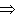

Anaphora Resolution of Japanese Zero Pronouns with Deictic Reference
Hiromi Nakaiwa and Satoshi Shirai
NTT Communication Science Laboratories
1-2356 Take, Yokosuka-shi, Kanagawa-ken, 238-03, Japan
{nakaiwa,shirai}@nttkb.ntt.jp
Abstract
This paper proposes a method to resolve the reference of deictic
Japanese zero pronouns which can be implemented in a practical machine
translation system. This method focuses on semantic and pragmatic
constraints such as semantic constraints on cases, modal expressions,
verbal semantic attributes and conjunctions to determine the deictic
reference of Japanese zero pronouns. This method is highly effective
because the volume of knowledge that must be prepared beforehand is
not very large and its precision of resolution is good. This method
was implemented in the Japanese-to-English machine translation system,
ALT-J/E. According to a window test for 175 zero pronouns with
deictic referent in a sentence set for the evaluation of
Japanese-to-English machine translation systems, all of zero pronouns
could be resolved consistently and correctly.
[ In Proceedings of COLING-96, Vol.2, pp.812-817 (August, 1996). ]
INDEX
1 Introduction
In all natural language, elements that can be easily deduced by the
reader are frequently omitted from expressions in texts (Kuno, 1978). This phenomenon causes considerable
problems in natural language processing systems. For example in a
machine translation system, the system needs to recognize that
elements which are not present in the source language, may become
mandatory elements in the target language. In particular, the subject
and object are often omitted in Japanese, whereas they are often
mandatory in English, Thus, in Japanese-to-English machine translation
systems, it is necessary to identify case elements omitted from the
original Japanese (these are referred to as "zero pronouns" ) for
their translation into English expressions.
Several methods have been proposed with regard to this problem (Kameyama, 1986) (Walker et al.,
1990) (Yoshimoto, 1988) (Dousaka, 1994). When considering the application of
these methods to a practical machine translation system for which the
translation target area can not be limited, it is not possible to
apply them directly, both because their precision of resolution is low
as they only use limited information, and because the volume of
knowledge that must be prepared beforehand is so large.
The zero pronouns that must be resolved by a machine translation
system can be classified into 3 types, (a) zero pronouns with
antecedents within the same sentence (intrasentential), (b) zero
pronouns with antecedents elsewhere in the text (intersentential) and
(c) zero pronouns with deictic reference (extrasentential). Regarding
type (b), Nakaiwa and Ikehara (1992) proposed a
method to determine the intersentential antecedents using verbal
semantic attributes. The rules used in this method are independent of
the field of the source text. Therefore, anaphora resolution may be
conducted with a relatively small volume of knowledge, making the
proposed method very suitable for machine translation
systems. Furthermore, for type (a), Nakaiwa and
Ikehara(1995) proposed a method to determine the intrasentential
antecedents of Japanese zero pronouns using semantic constraints such
as verbal semantic attributes and pragmatic constraints such as types
of conjunctions and modal expressions.
In this paper, we propose a wideIy applicable method to determine the
deictic referents of Japanese zero pronouns (type (c)) using not only
semantic constraints to the cases but also further semantic
constraints such as verbal semantic attributes and pragmatic
constraints such as modal expressions and types of conjunctions.
2 Appearance of Zero Pronouns in Japanese Texts
In order to understand the distribution of zero pronouns with
antecedents that do not appeaf in the text, in this section, we
examine which zero pronouns must be resolved and where their
antecedents appear, using a test set designed to evaluate the
performance of Japanese-to-English machine translation systems (Ikehara et al., 1994). The results of the
examination of zero pronouns and their referential elements in the
functional test sentence set (3718 sentences) are shown in Table
1. There were a total of 512 zero pronouns in 463 sentences. The
location of referential elements can be divided into 2 kinds: those
expressed in the same sentence, and those not expressed in the same
sentence. The latter were further classified into 6 kinds.
- The zero pronoun is not translated because the passive voice is used.
- The referent is the writer or speaker, I or a group,we.
- The referent is the reader or hearer, you.
- The referent is human but it is not known who the human is.
- The zero pronoun should be translated as it.
- The referent is another specific element.
Table 1: Distribution of zero pronouns and their referential elements
| Loc. of zero pron. |
Loc. of 'referential elements' | Total |
| Intrasentential | Deictic |
| Psve | I we | you | human | it | misc |
| ha | 1 |
5 | 0 | 0 | 0 | 2 | 0 | 8 |
| ga | 128 |
166 | 69 | 28 | 25 | 50 | 3 | 469 |
| o | 8 |
0 | 0 | 0 | 0 | 11 | 0 | 19 |
| ni | 1 |
2 | 2 | 5 | 0 | 0 | 2 | 12 |
| misc | 1 |
0 | 1 | 1 | 0 | 1 | 0 | 4 |
| Total | 139 |
373 | 512 |
According to this study of the functional test sentence set, in 373
out of 512 instances (73%) the antecedent was not expressed in the
sentence. Zero pronouns could be left unexpressed by converting the
translation to the passive voice in 173 instances (34%). The other
zero pronouns, 200 instances (39%), referred to antecedents that did
not appear in the sentence. In 69 out of the 200 instances (13%) zero
pronouns were the subject of the sentence and referred to the writer
or speaker I or a group we. Further examination revealed
that only in these 69 instances did the verb that governed them
express some modality such as -shiiai '- want to -' or
-shiyou 'Let us -' or the verbs were omou 'think' and
other such words indicating 'THINKING ACTION'. Furthermore, zero
pronouns that were the subjects and that referred to the reader or
hearer you, amounted to 28 out of the 200 instances (5%). In
these 28 instances, the verbs that governed these zero pronouns
expressed the modalities of - subekida 'should' or
-sitehanaranai 'must not'. Similarly, modalities and verb types
can be used to identify it or the 'unknown human' This type of
zero pronoun can be resolved by deducing their referents using
modality or categorized verbal semantic attributes.
3 Deictic Resolution of Japanese Zero Pronouns
Based on the results shown in section 2, we propose a method to
resolve Japanese zero pronouns whose antecedents do not appear in the
texts.
3.1 Deictic Resolution using Semantic Constraints on Cases
To resolve Japanese zero pronouns whose antecedents do not appear
within the texts, it is possible to use the semantic constraints on
verbs' case elements to deduce likeIy referents. The semantic
information used to estimate supplementing elements is similar to the
constraints on cases used for selecting the transfer patterns in a
machine translation system. Figure 1 shows an example of a transfer
pattern in a Japanese-to-English machine translation system for the
Japanese verb ikimasu 'go' Figure 1 shows how, if the Japanese
verb is ikimasu 'go' and the noun phrase with a ga
particle, which shows a subject, has the semantic attribute SUBJECT,
VEHICLES OR ANIMALS, then the verb should be 'translated as 'go' In
this pattern, if the subject N1 becomes a zero pronoun, the system
tries to estimate the referent using semantic constraints. But, in
this case, it is impossible to estimate the referent as one type,
because there are three kinds of semantic constraints. In the transfer
pattern, the semantic constraints are left unfulfilled if they are not
used in selecting the appropriate translation. So, this method
Frequently poses difficulties in pinpointing elements to be estimated.
| N1 (SUBJECTS, VEHICLES OR ANIMALS)-ga |
|
iki-masu |
| N1-SUBJ | go-POLITE |
 N1 go. |
|
Figure 1 Japanese-to-English transfer dictionary
According to the results that were examined in section 2, this type of
zero pronoun can be resolved by deducing their referents not only
using semantic constraints to the cases but also using modality or
categorized verbal semantic attributes. For example, in this case, it
is effective to determine the referents corresponding to 'I' using the
verbal semantic attributes of the pattern, N1's PHYSICAL TRANSFER and
the polite expression -masu.
3.2 Deictic Resolution using Semantic and Pragmatic Constraints
According to the analysis of the results shown in section 2, we found
that modal expressions and verbal semantic attributes are useful in
determining the deictic referents of Japanese zero pronouns. Also, we
can estimate the types of conjunctions that are effective in
determining the referents in a complex sentence. In this section, we
examine three kinds of semantic and pragmatic constraints, modal
expressions, verbal semantic attributes and conjunctions.
3.2.1 Constraints Based on Modal Expressions
Modal expressions in Japanese are expected to be the most powerful
constraints for estimating deictic reference. For example, in the case
of zero pronouns in ga-cases 'subject', the referent becomes the
writer or speaker, I or a group, we if the sentence has
the modal expressions, -sitai ' want to - ' HOPE or
-sitehosii ' want to -' CAUSATIVE HOPE; the referent
becomes the reader or hearer, you if the sentence has the modal
expressions, -siteha-ikenai ' must not -' PROHIBIT or
-subekida ' should -' OBLIGATION. If there are no referent
candidates found within the surrounding text, the referents can be
determined using the previous constraints based on modal expressions.
3.2.2 Constraints based on Verbal Semantic Attributes
Constraints based on verbal semantic attributes can be divided into
the following two types:
(1) Constraints based on the types of verbs
'Give and take' expressions such as the verbs morau 'get' and
yaru 'give' and transfer expressions such as the verbs
iku 'go' and kuru 'come' can determine the referents of
zero pronouns without modal expressions. For example, if the
ga-case (subject) of the sentence whose verb is morau
'get ' becomes a zero pronoun, the referent becomes I. In the
case of verb kuru 'come', the referent becomes an element other
than I, for example you. These kinds of verbs
implicitly indicate the relationship between the writer/speaker and
the referent of the ga-case (for example, the empathy (Kuno, 1978) or the side of the territory of
information (Kamio, 1985)). Based on these
properties, the deictic referents of Japanese zero pronouns can be
estimated.
(2) Constraints based on the types of verbs and modal expressions
Even if the referents of zero pronouns can not be determined using
modal expressions or the types of verbs, the referents can sometimes
be determined using a combination of modal expressions and the types
of verbs. For example, in the following Japanese expression, the
ga-case becomes a zero pronoun.
| |
(1) | |
| |
hon-wo | |
yon-da |
| -SUBJ |
book-OBJ |
read-PAST |
| I read a book. |
In this sentence the experience of the writer/speaker, I is
suitable for the reference of the zero pronoun. As shown in this
sentence, if the ga-case in an expression with a verb whose semantic
attribute is ACTION and modal expression is -ta
PAST, becomes a
zero pronoun, it will be translated by a human translator as
I. In a similar way, if the ga-case in an expression with a
verb whose semantic attribute is ACTION and modal expression is
-darou 'will' ESTIMATION, becomes a zero pronoun, the referent
is you. Such constraints using both verbal semantic attributes
and modal expressions can be used to determine the deictic reference
of Japanese zero pronouns. To write constraints based on types of
verbs effectively, we used the 97 verbal semantic attributes (VSA)
proposed by Nakaiwa (1994).
3.2.3 Constraints based on Conjunctions
Sometimes the deictic referents of Japanese zero pronouns can be
determined depending on the types of conjunctions. The constraints
based on the Japanese conjunctions can be divided into the following
two types.
(1) The constraints on case sharing depending on the types of conjunctions
Minami (1974) and Takubo
(1987) proposed that different Japanese conjunctions cover or
share different cases. For example Minami divided Japanese
conjunctions into three kinds, A, B and C. A complex sentence which
includes A type Japanese conjunctions, such as tsitsu ('while '
and nagara 'while', shares one ha-case (Topic) and one ga-case
(Subject). In the case of B type Japanese conjunctions, such as
node 'because' or tara 'if', one ha-case is shared but
not the ga-case. In the case of C type Japanese conjunctions, such as
keredo 'but' or kedo 'but', neither the ha-case nor the
ga-case are necessarily shared. According to this classification, if
two ga-cases in a complex sentence joined by an A type Japanese
conjunction were to become zero pronouns and the referent of one of
the two zero pronouns was determined by the constraints proposed
previously, then the referent of the other zero pronoun is the same
referent. These characteristics of Japanese conjunctions can be used
to determine the referents of zero pronouns.
(2) Constraints based on conjunctions, modal expressions and verbal semantic attributes
Sometimes co-occurrence of conjunctions, verbal semantic attributes
and modal expressions in a complex sentence determines the meaning of
the sentence, and sometimes bhey determine the deictic reference of
zero pronouns in the sentence. For example, in the following Japanese
expression, the subject of the verb ika-nai 'go-not' becomes a
zero pronoun but the referent can be determined as the writer or
speaker, you.
| |
(2) | |
| |
tokoya-ni | |
ika-nai | |
to, | |
kami-ga | |
boubou-ni-naru |
| -SUBJ | barber-IND-OBJ |
go-not | if | hair |
begin to look untidy |
| If you don't go to the barber, your hair will begin to look untidy. |
This sentence has the meaning that the writer or speaker advises that
if you do not do something, a situation will arise. The meaning type
of a complex sentence can be determined using the rules that the
conjunction is to 'if' and in the sub clause ga-case becomes a
zero pronoun and the meaning of the verb is ACTION with negation and
in the main clause the meaning of the verb is ATTRIBUTE with modal
expression ni-naru 'become' ATTRIBUTE TRANSFER.
The meaning type of a complex sentence can be determined using the
folowing rules: when the conjunction is 'if' and the sub clause
ga-case becomes a zero pronoun, and the meaning of the verb is ACTION
with negation, and in the main clause the meaning of the verb is
ATTRIBUTE with modal expression, then ni-naru 'become' is an
example Of ATTRIBUTE TRANSFER. Using these kinds of rules, the meaning
types of complex sentences can be determined, and the reference of
zero pronouns can be determined.
3.3 Algorithm
In this subsection, we propose an algorithm for the deictic resolution
of Japanese zero pronouns using the constraints proposed in this
section. This algorithm was implemented in a Japanese-to-English
machine translation system, so the only zero pronouns that must be
resolved are those that become mandatory elements in English. To
realize the previousIy proposed conditions in an algorithm, we must
consider cases when these antecedents exist in the same sentence as
well as when these antecedents exist in another sentences in the text,
and we must design the algorithm to increase the overall accuracy of
the resolution of zero pronouns.
Anaphora resolution of zero pronouns is conducted as follows. In each
step in the algorithm, when the referential element within or without
the text is determined, the system checks not only the conditions that
are written in the following algorithm, but also the semantic
conditions that verbs impose on zero pronouns in the case elements in
each pattern of the Japanese-to-EngIish transfer dictionaries.
| |
1) | |
Detection of zero pronouns. |
| If they exist, proceed to step 2. |
|
|
| 2) |
Examine whether there are antecedents within the same
sentences. (For example, anaphora resolution is performed
using Nakaiwa's method (Nakaiwa and Ikehara,
1995)). |
| If their antecedents can be found, finish the resolution
process. Else, proceed to step 3. |
|
|
| 3) |
Examine whether there are antecedents within other sentences
in the text. (For example, anaphora resolution is performed
using Nakaiwa's method (Nakaiwa and Ikehara,
1992)) |
| If their antecedents can be found, finish the resolution
process. Else, proceed to step 4. |
|
|
| 4) |
Deictic resolution of Japanese zero pronouns using verbal
semantic attributes, modal expressions and the types of
conjunctions are conducted. The conditions to determine the
referents are summarized in Table 2. |
| If their referents can be found, finish the resolution
process. Else, proceed to step 5. |
|
|
| 5) |
If referential elements can not be found and the text can be
translated successfully in the passive voice, translate in the
passive voice. Else, based on the semantic restrictions
imposed on the zero pronoun by the verbs, deductively generate
anaphora elements. |
| Finish the resolution process. |
Table 2: Resolution conditions of deictic referents
| Location of Zero Pron. | Condition |
Referents | Comment |
|
|
ga-case
(subj) |
modal: hope(-sitai) |
I or we |
speaker/writer hopes |
| modal: causal hope (-sitehosii) |
speaker/writer hopes to hearer/reader |
| modal: invite (-simashou) |
speaker/writer invites |
| VSA: under action + modal:plite (-simasu) |
depending on the social relation ship between speaker/writer and
hearer/reader |
| ..... | ..... |
| modal: prohibit (-siteha-ikenai) |
you |
speaker/writer prohibits hearer/reader's action |
| VSA: under action+modal obligatton (-beki) |
speaker/writer make hearer/reader's action obligation |
| ..... | ..... |
VSA:
bodily action
thinking action
emotive action
emotive state
bodily transfer |
human
(I, we, you, ...) |
When the verb that show the actton or emotion that only human can do appears
in the sentence and when there are noother referent candidates,
the referents of zero pronouns is humman |
| ..... | ..... |
| VSA: copula sentence and the meaning is abstract |
it |
Pronoun of abstract noun should be it |
| VSA: attribute and perceptual state |
verbs that indicates weather such as atsui 'hot',
-samui 'cold' |
| ..... | ..... |
ni-case
(ind. obj.) |
modal: causal hope (-sitehosii) |
you |
speaker/writer hopes to hearer/reader |
| ..... | ..... |
4 Evaluation
4.1 Evaluation Method
In this section, we show the results of evaluation of the method that
was proposed above. The method to resolve zero pronouns with deictic
reference was tested using the Japanese-to-English machine translation
system ALT-J/E (Ikehara et al., 1991). The
criteria for the evaluation and procedures used were as follows.
4.1.1 Resolution Target
The target was to resolve successfully the five types of zero pronouns
(ga-case  "I" or "we", ga-case "you", ga-case HUMAN,
ga-case "it", ni-case "you"; 175 instances). These are the
zero pronouns with deictic reference found within the 512 zero
pronouns in the 3718 sentence set for the evaluation of
Japanese-to-English machine translation systems.
"I" or "we", ga-case "you", ga-case HUMAN,
ga-case "it", ni-case "you"; 175 instances). These are the
zero pronouns with deictic reference found within the 512 zero
pronouns in the 3718 sentence set for the evaluation of
Japanese-to-English machine translation systems.
4.1.2 Rules to Resolve Zero Pronouns
The rules to resolve 175 zero pronouns were created by examining these
zero pronouns using the constraints discussed in section 3 (46
rules)1.
4.1.3 Tests for the Evaluation
To examine the relationship between conditions of resolution and
accuracy of resolution, we conducted the following two tests.
(1) Resolution accuracy for conditions of resolution
We examined the accuracy of resolution depending on the types of
conditions in anaphora resolution such as semantic constraints to the
cases, modal expression, verbal semantic attributes and conjunctive
expressions. We evaluated the accuracy depending on the types of
constraints used.
(2) Resolution accuracy for rule complexity
We examined the accuracy of the resolutions to see how they were
affected by the complexities of the rules that were used in the
resolution. In this test we evaluated the accuracy using simple,
easily created and universal rules.
4.2 Resolution Accuracy for Conditions of Resolution
To examine the resolution accuracy under different conditions, we
examined the accuracy of the method proposed in this paper with the
following 4 kinds of conditions:
- using conditions of semantic constraints on cases only
- using conditions of semantic constraints on cases and modal expression
- using conditions of semantic constraints on cases,
modal expression and verbal semantic attributes
- using conditions of semantic constraints on cases,
modal expression, verbal semantic attributes and conjunctions
Table 3 shows the results of the resolution depending on the types of
the rules. As shown in this table, all 175 zero pronouns can be
resolved using the rules that were proposed in section 3. The
introduction of verbal semantic attributes has achieved the same
accuracy of resolution as the introduction of modal expressions (41
entries, 24%). From this result, we can say that the verbal semantic
attributes are comparatively as effective as modal expressions, The
results also show that, without using the constraints of conjunctions,
the accuracy achieved is as high as 85%.
Table 3: Resolution accuracy for conditions of resolution
| Location of Zero Pronouns |
Referents | Resolution Condition |
| Semtic Constraints on Cases | + Modal Expression |
+ VSA | + Conjunction |
|
|
ga-case
(subj) | I or We |
23% | (16) | 58% (+35%) | (40) |
93% (+38%) | (64) | 100% (+7%) | (69) |
| you |
0% | (0) | 43% (+43%) | (12) |
61% (+18%) | (17) | 100% (+39%) | (28) |
| human | I |
0% | (0) | 0% | (0) |
67% (+67%) | (6) | 100% (+33%) | (9) |
| you |
0% | (0) | 0% | (0) |
55% (+55%) | (6) | 100% (+45%) | (11) |
| one |
0% | (0) | 0% | (0) |
0% | (0) | 100% (+100%) | (3) |
| Sum |
0% | (0) | 0% | (0) |
49% (+49%) | (12) | 100%(+51%) | (23) |
| it |
100% | (50) | 100% | (50) |
100% | (50) | 100% | (50) |
ni-case
(ind. obj.) | you |
0% | (0) | 100% | (5) |
100% | (5) | 100% | (5) |
|
|
| Sum |
38% | (66) | 61% (+24%) | (107) |
85% (+24%) | (148) | 100% (+15%) | (175) |
4.3 Resolution Accuracy against Rule Complexity
To examine how the resolution accuracy varied according to the
complexity of rules, we tested the accuracy of the method proposed in
this paper at different levels of complexity. The complexities C were
evaluated using the following formula, and depended on the number of
constraints used.
| C = | # of modal const.* 1 + # of VSA const.* 1 |
| + # of conjunctions const.* 2 |
In this formula, 1 in the modal and VSA and 2 in the conjunction
indicate the weights. Because conjunction constraints affect both
sides of the unit sentence, we gave the conjunctions constraints a
weight of 2. According to this formula, the complexity of a rule that
has a constraint for conjunctions and for VSA in the main clause and
for modal and VSA in the sub clause, becomes 5(= 1(modal)*1 + 1(VSA)*2
+ 2(conjunction)*1).
Table 4 shows the accuracy of the resolution depending on the
complexities of the mules. 46 kinds of rules were used in the deictic
resolution of 175 zero pronouns as shown in table 4. The accuracy of
resolution using rules with complexities of 3 or less, is 90%, and the
accuracy of resolution using rules with complexities of 4 or less, is
95%. This result shows that the use of the constraints based on modal
expressions, VSA and conjunctions can achieve high accuracy using
relatively simple rules.
Table 4: Resolution accuracy for complexities of rules
| Resolution Condition |
Complexities of Rules | Number of Rules |
Accuracy |
| Modal Expression | VSA | Conjugations |
| 0 | 0 | 0 |
0(Only semantic constrainnts to casess) | 0 |
38% | (66) |
| 1 | 0 | 0 | 1 | 11 (+11) |
61% (+24%) | (107 (+41)) |
| 0 | 1 | 0 | 1 | 12 (+1) |
62% (+1%) | (108 (+1)) |
| 1 | 1 | 0 | 2 | 29 (+17) |
85% (+24%) | (148 (+40)) |
| 0 | 0 | 1 | 2 | 30 (+1) |
85% (+1%) | (149 (+1)) |
| 1 | 0 | 1 | 3 | 31 (+1) |
86% (+1%) | (151 (+2)) |
| 0 | 1 | 1 | 3 | 34 (+3) |
90% (+3%) | (157 (+6)) |
| 1 | 1 | 1 | 4 | 36 (+2) |
93% (+3%) | (163 (+6)) |
| 0 | 2 | 1 | 1 | 39 (+3) |
95% (+2%) | (167 (+4)) |
| 2 | 1 | 1 | 5 | 40 (+1) |
96% (+1%) | (168 (+1)) |
| 1 | 2 | 1 | 5 | 44 (+4) |
99% (+3%) | (173 (+5)) |
| 2 | 2 | 1 | 6 | 46 (+2) |
100% (+1%) | (175 (+2)) |
5 Conclusion
This paper proposes a powerful method for the resolution of Japanese
zero pronouns with deictic reference. It was found possible to resolve
all of the sentences in the window test where the referential elements
were not in the sentence resolved. This was achieved by the
introduction of rules based on four kinds of constraints: semantic
constraints on cases, modal expressions, verbal semantic attributes
and conjunctions. In the future, we will examine the universality of
the rules that have been discussed in this paper by applying them to
other texts and examine a method for automatically acquiring the rules
needed to resolve zero pronouns with deictic references.
Acknowledgments:
We would like to thank Professor Satoru lkehara of Tottori University
for providing valuable comments and suggestions.
References
- Kouji Dousaka. 1994.
- Identifying the Referents if Japanese Zero-Pronouns based on Pragmatic
Condition Interpretation.
In Trans. of IPS Japan, 35(10):768-778. In Japanese.
- Satoru Ikehara, Masahiro Miyazaki and Akio Yokoo. 1991.
- Semantic Analysis Dictionary for Machine Translation.
In Technical Reports of SIG on NLP, NL-84-13, IPS Japan. In Japanese.
- Satoru Ikehara, Shirai Satoshi and Kentaro Ogura. 1994.
- Criteria for Evaluating the Linguistic Quality of Japanese-to-English
Machine Translation.
In Journal of JSAI, 9(5):569-579.
- Satoru Ikehara, Shirai Satoshi, Akio Yokoo and Hiromi Nakaiwa. 1991.
- Toward MT system without Pre-Editing -Efects of New Methods in ALT-J/E-.
In Proc. of MT Summit III, pages 101-106.
- Megumi Kameyama. 1986.
- A property-sharing constraint in centering.
In 24th Annual Meeting of ACL, pages 200-206.
- Akio Kamio. 1985.
- Danwa ni okeru Shiten.
Nihon-go gaku, 4(12):10-21. Taishukan Publ. Co., Tokyo. In Japanese.
- Susumu Kuno. 1978.
- Danwa no Bunpoo.
Taishukan Publ. Co., Tokyo. In Japanese.
- Fujio Minami. 1974.
- Gendai Nihon-go no Kouzou.
Taishukan Publ. Co., Tokyo. In Japanese.
- Hiromi Nakaiwa and Satoru Ikehara. 1992.
- Zero Pronoun Resolution in a Japanese-to-English Machine Translation System
by using Verbal Semantic Attributes.
In Proc. of ANLP92, pages 201-208, ACL.
- Hiromi Nakaiwa, Akio Yokoo, and Satoru Ikehara. 1994.
- A System of Verbal Semantic Attributes Focused on the Syntactic Correspondence
between Japanese and English.
In Proc. of COLING94, pageS 672-678.
- Hiromi Nakaiwa, and Satoru Ikehara. 1995.
- Intrasentential Resolution of Japanese Zero Pronouns in a Machine Translation
system using Semantic and Pragmatic Constraints.
In Proceedings of TMI95, pages 96-105.
- Yukinori Takubo. 1987.
- Tougo Kouzou to Bunmyaku Jyouhou.
Nihon-go gaku, 4(12):10-21. In Japanese.
- Marilyn Walker, Masayo Iida and Sharon Cote. 1990.
- Centering in Japanese Discourse.
In Proc. of COLING90.
- Kei Yoshimoto. 1988.
- Identifying Zero Pronouns in Japanese Dialogue.
In Proc. of COLING88, pages 779-784.
Footnote
1
At the moment, it is difficult to use sentences which were not
successfulIy syntactically and semantically analyzed for the
evaluation of our method. So, to evaluate the technical limitation of
proposed method, we evaluated the resolution accuracy in the sentences
which were examined to make the 46 rules (window test). We will
conduct blind tests after we have finished debugging the whole
system. (Return)